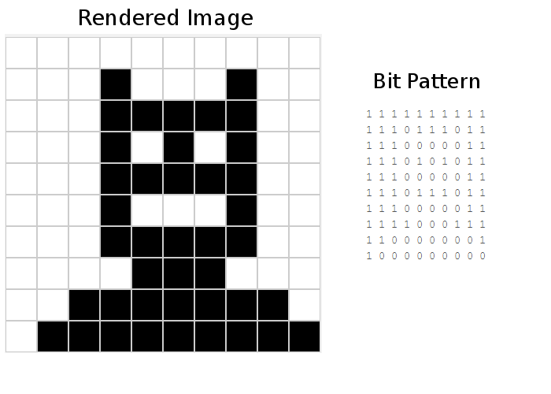
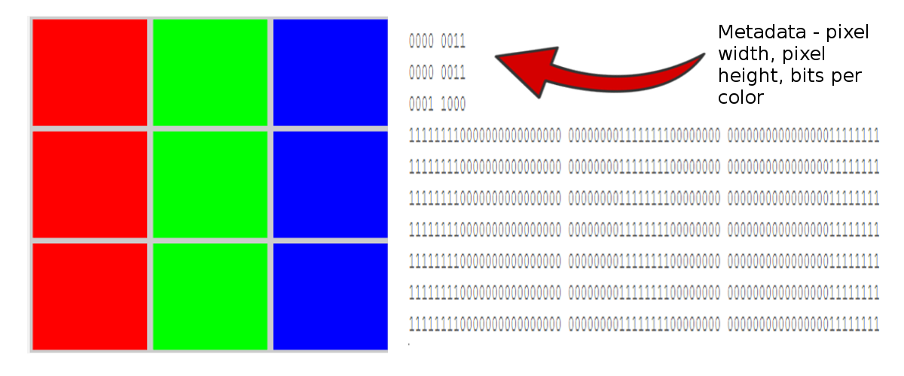
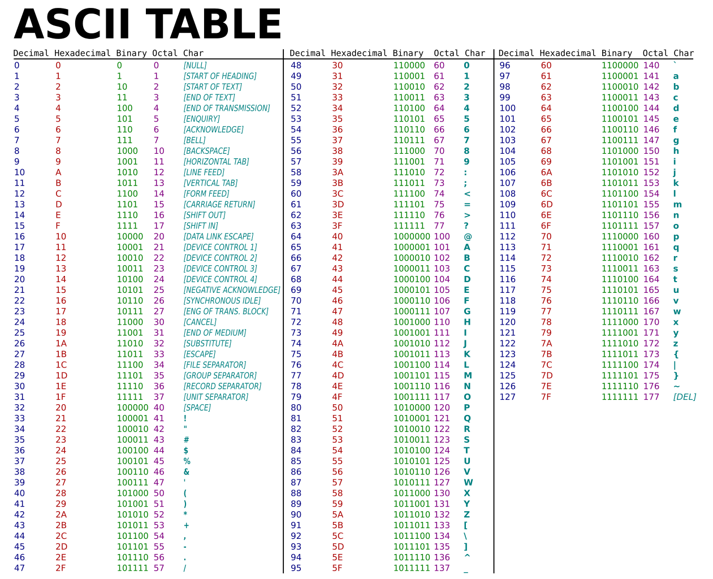
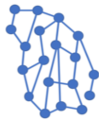

least measurement unit, pulse, represented as 1 or 0
8 bits
base 2
base 10
base 16
too few bits to represent number
American Standard Code For Information Interchange
represents a dot in an image
levels of Red, Green and Blue
reduces size of data files
results in loss of original data
allows restoration to original, no loss of data
legal protection against use of work by others
allows owner to grant permissions for use of work
group of computers with ability to communicate
consists of multiple smaller networks
computers linked without central control
set of guidelines, agreed to
state how information is sent over the internet
identifies each device attached to the internet
32 bit address, allows for about 4 billion addresses
128 bit address, allows for 340 undecillion addresses
maps domain name (like www.abc.com) to IP address
Transmission Control Protocol/Internet Protocol
sent over the internet
packets may be sent on different routes to destination
joins networks and directs network traffic
data sent on internet connection per unit of time
time to get a response from an internet node
multiple possible paths through network, source to destination
multiple redundant pathways, protocols re-sending lost data
ability of internet to grow or shrink, still function
supports transmittion of documents on internet
formats documents for rendering in a browser
sequence of lines of code
individual user of the app
planned users of the app
data added to a system
data shown by system
data shown by system
occurrence like a mouse click
apps driven by programming events
part of program the user can see and use
controls supported by modern UIs
group of buttons allowing 1 selection only
one or more buttons allowing selection
text display element
text entry element
clickable element
visual elelent, renders image file
field showing multiple choices when clicked
attribute of the element, like colour
named location in computer memory
rules for coding in the programming language
invalid syntax
logic or intent behind code
logic flaw in code
error in logic of code, semantic error
finding and fixing bug, semantic error
if, evaluates expression and make decision
block of code, given a name to invoke with
Let's see.. .
This is a difficult year,
and you still took
AP Computer Science Principles,
virtually.
Now you are halfway through..
You can ace this!
Good Luck :)
Study, rest ...
.. do your best!
| There are 10 types
of people in the world, those who know binary and those who don't! stars What is binary? stars Why is binary important on computers? stars How can I convert a decimal number to binary? stars What's hexadecimal? stars Can hexadecimal be converted to decimal? binary? stars Why use hexadeciaml or decimal? stars How many bits does a number need? stars What is overflow? |
question_answer
Binary is a number system, that's it! The number base that binary uses is base 2. The only digits that binary has are 1 and 0. The reason binary is important for computing relates to digital representation. A binary 1 represents a pulse and a binary 0 represents no pulse (of electricity of course). The only way a computer can record information is with pulses of electricity, and these map perfectly to a 1 or a 0. To convert a binary number to the equivalent decimal number, you use the base, which is 2, and multiply each digit by the base raised to the power of the digit's place position. Hover to see an example . A binary number is represented as a string of 1s and 0s, like this 1010 A subscript of 2 indicates that this number is a binary number, and not one thousand and 10. 10012 This number can be shown in expanded form as, (1 x 2 3) + (0 x 2 2) + (1 x 2 0 (8) + (0) + (0) + (1) = 9 Octal is a term that represents base 8, and hexadecimal represents base 16. '0x' is a prefix for a hexdecimal number, like 0x1B7A. It takes 4 bits to represent a hexadacimal number in binary. Want to review the hexadecimal chart? Hover 0x2D5C? 2 is 0010, D is 1101, 5 is 0101, C is 1100, so 0x2D5C is 0010110101011100. You can convert 0x2D5C to decimal by using the binary translation and mulyiplying by powers of 2, or you can multiply the digits by powers of 16. 0x2D5C : (2 x 16 3) + (D x 16 2) + (5 x 16 1) + (C x 16 0) The computer only understands pulses of electricity, represented to us as the 1s and 0s in a binary stream. The equivalent decimal, octal and hexadecimal representations take up a lot less space and are easier to compare on a chart. This is why you need to know how to convert between the bases. A bit is the smallest unit of storage on a computer, and can represent a 1 or a 0. Any one hexadecimal digit requires 4 bits. Suppose we only allow for 4 bits of storage and want to represent the number 20? In binary, 20 is 101002. This needs 5 bits, so if we only had 4 bits there would be overflow and we would only see 0100. The hexadecimal number system has 16 digits, shown below with the binary representation.
|
Click outside the box to close
| The goal is to turn data into information and information into
insight – Carly Fiorina stars How is text represented in a computer? stars What is the ASCII table? stars How can I convert text to binary representation? stars How are images represented on a computer? stars What is metadata? stars What is sampling? stars How many bits does a number need? stars What is overflow? |
question_answer
Characters in text are mapped to a binary represenation so that they can be digitized and stored and recognized by a computer. The ASCII (American Standard Code for Information Interchange) chart is how this is done! The letter 'A' is decimal 65, 100000012 . Images are encoded using
In a black and white image, 1 might represent white, 0 might represent black, as in the image below.  Color images take more bits, but are represented digitally using a color model. There are several color models that are used to represent colors digitally. The RGB (Red-Green-Blue) color model uses values that represent levels of red, levels of green and levels of blue. The more bits represent these values the more colors. If only 3 bits are available to represent colors, 1 for red, 1 for green and 1 for blue, then 8 colors are possible. If 8 bits are available per color, then we can have 28 hues of red, 28 hues of green and 28 hues of blue - a total of 2 24 different colors.  Things in the real world are not digital, they are not represented as pixels in a coordinate grid, like digital images are. Things we see are described as analog. However, real life images need to be encoded digitally. Sampling is the process of splitting up the real-life image into tiny and tinier squares so these squares can be represented as pixels - like imposing a grid over a painting and figiring out what colors fit in each square. Sampling is doing the ground work with the real image, so that digitizing the coordinates values with the most applicable colors looks true to life. Decreasing the size of the sampling square(the pixel) and increasing the number of samples(the squares) typically leads to a better quality image.

|
Click outside the box to close
| The goal is to turn data into information and information into
insight – Carly Fiorina stars What is data compression? stars Why is data compression necessary? stars What file extensions show data compression? stars Can compressed data be restored? stars What is lossy compression? |
question_answer
Data is encoded digitally as pulses of electricity, which we represent as binary 1s and 0s. Data can take up a lot of space. A 3 minute song takes up about 30 Megabytes of storage, mega is million, so 30 million bytes, and a byte is 8 bits, so 240 million bits. A 1 hour long high definition video takes around 800 Gigabytes
Data compression is a general term for technology that encodes data in order to shrink the data. The data is stored in files. Smaller files take up less room, leaving more storage real-estate. Also, smaller files are faster to transfer over a network, whether that network is the Internet, an intranet, or a local area network (LAN). Sometimes compression is lossy, which means that to save space some information is thrown away and the data cannot be restored to it's original form. When data is compressed without losing any details, this is lossless compression. The data can be decompressed into the exact original. |
Click outside the box to close
| The copyright bargain: a balance between protection for the
artist and rights for the consumer
– Robin Gross stars What is a copyright license? stars Are copyright licenses forever ? |
question_answer
Copyright refers to the legal right of the owner of intellectual property to protect the hard work they put into the creation of that artefact by governing who can copy the work. Copyright licenses mean that the original creator of a product and anyone the creator gives authorization to, are the only ones with the right to reproduce the work. Typically, copyright licenses only apply for a limited amount of time. |
|
stars What is Creative Commons? stars What is a creative commons license? |
question_answer
Creative Commons is an American non-profit organization and international network devoted to educational access and expanding the range of creative works available for others to build upon legally and to share. Creative Commons licenses give everyone from individual creators to large institutions a standardized way to grant the public permission to use their creative work under copyright law. From the reuser’s perspective, the presence of a Creative Commons license on a copyrighted work answers the question, “What can I do with this work?” There are currently 6 different licenses created under the Creative Common license umbrella, giving owners of intellectual property a range of options for deciding how the work is used and protected. The digitization of information, and the ease of copying and rebranding, pose challenges to intellectual property rights. |
Click outside the box to close
|
The internet is becoming the town square for the global
village of tomorrow - Bill Gates stars When did the internet start? stars Who created the internet? stars What's a distributed network? stars What's a centralized network? stars Who is in charge of the internet? |
question_answer
The internet is a network of networks, linking billios of devices together! The internet grew from the work of many scientists across different continents. The US government agency, Advanced Research Projects Agency, ARPA, was formed by the department of defence to bolster and oversee American technology after Russia launched a satellite called Sputnik. One of the projects was a set of linked computers, given the name ARPANet. This morphed into the modern internet. In the US, Vint Cerf and Bob Kahn Centralized networks are networks that have a center of control. . Problem, if the center of control is taken out by a missile strike, then the whole network is down. The solution was created by Paul Baran, a distributed network,  in which computers are connected to each other in a mesh network, and there is no central control. Baran came up with the idea of a network that would send units of information called packets, in different ways across the mesh network. As a result, a working nationwide packet network was created. No-one controls the internet and everyone controls the internet! The ICANN, a nonprofit organization composed of stakeholders from government organizations, members of private companies, and internet users from all over the world, now has direct control over the Internet Assigned Numbers Authority (IANA), the body that manages the web's domain name system (DNS). The internet is fully distributed, no central control. End to end connectivity is the guiding principle, any device can connect to any other device. |
| IP Addresses, how data is sent to the right location | |
|
The internet is a design philosophy and an architecture expressed in a set of
protocols - Vint Cerf stars What does every device attached to the internet need? stars What's a protocol? |
question_answer
Protocol is the term given to a set of guidelines and standards. Protpcols are important on the internet because manufactirers of computing devices need to agree on communications standards that they all agree to support so all the devices can communicate. Having protocols means that new technology can be included in the internet framework, by knowing what standards to abide by. One of the most important protocols on the internet concerns addressing, knowing the exact location to route data to. This protocol is called the Internet Protocol, IP Every device attached to the internet needs a unique address, called an IP (Internet Protocol) address. In the 1970s Vint Cerf and Bob Kahn invented The Internet Working Protocol, to make it possible for devices on the internet to communicate.There are 2 different types of IP or Internet Protocol addresses, and . |
| DNS, Domain Name System | |
| stars I never use an IP address to open a web
site? stars What is DNS? |
question_answer
DNS, Domain Name System, associates a domain name, like www.code.org, with an ip address. DNS servers work together to retrive IP addresses based on domain names, as a single DNS server could not store a directory of all existing domain names and their IP address. DNS servers are connected into a distributed hierarchy. Dividing the DNS servers into zones makes it easier to access the correct DNS server. These zones are established for all the .orgs, all the .coms, all the .edus and other domain extensions. (BTW, the domain name is CODE, the domain extension is .org, and the .org part identifies the zone) DNS is susceptible to cyberattacks, if the mapping between a domain name and it's IP address is changed, the user will be redirected to a different site.This is termed DNS spoofing. Ip and DNS are designed to scale, no matter how much the internet grows. |
| Reliability | |
|
starsHow is information sent on the
internet? starsHow is information sent on the internet? starsHow is the internet fault tolerant? |
question_answer Information is broken up and sent out on the internet in units of information called packets. These packets are not sent on the same pathway. Instead, the packets are numbered and sent out on different routes - to be reassembled at the destination. The availability of different routes may seem inefficient but it is not! The more redundant routes there are, the morecertain it is that all packets will get to the destination. If one route fails, another is available. Special computers called routers act like traffic cops and keep the packets moving along the correct route to the destination. These routers follow the internet protocol and keep track of routes for sending packets. The big idea is to choose the most efficient route to the destination. The packets may all be sent out on different routes and are reassembled at the destination. If a particular route has a problem, or is down, or backed up, a packet can be sent on a different route. This feature makes the internet fault-tolerant, and therefore more reliable. Do we know if all the packets are delivered? Yes we do, courtesy of Transport Control Protocol, or TCP/IP. When packets arrive at the destination TCP evaluates the transmission, and sends a message to the sender to resend any missing or damaged packets. TCP/IP and router systems are scaleable, they can work with few devices or many! Fault tolerance and redundancy make the internet more relaible! |
| Communications Media | |
|
starsHow is a message sent over the
internet? starsWhat is bandwidth? starsWhat is bit rate? starsWhat is latency? question_answerHow long does it take to download, say 5 MB? |
question_answer Information is sent on the internet as pulses as electricity, light or radio waves, on the lines of the internet. The smallest unit of information is a bit, a pulse or lack of, and to us this can be represented as a 1 or a 0. Bandwidth measures how many bits are sent, bandwidth is the maximum transmission capacity of a device. Bandwidth is measured by bit rate, which is the maximum number of bits that can be sent per unit of time (usually seconds). Latency is another measure of performance. Latency is the time it takes for a bit to get from source to destination. Ideally, you want low latency and high bandwidth! Can you figre out how long it takes to download a 4 MB song, at a bitrate of 1 MB per second? Different substrates are used to transfer bits of information over the internet. These substrates have . In practice, several substrates get the bits to their destination. |
| Requests To Transfer Information | |
|
stars What's a URL? stars What's HTTP ? stars What's an HTTP request? stars What's HTML? |
question_answer A web site is identified by a URL, or Uniform Resource Locator, like this, http://computers.org When you type this in, your computers contacts a server, and uses a language called HTTP to ask that server for the files that are associated with a web site. Each file that makes up a web site, pictures images and special other files are requested and sent to your computer so the web pages can be rendered by your browser. These pages that are behind the web site are created in a markup or formatting language called . |
HTTP, HyperText Transfer Protocol.
HTTP is a language that is used to GET web documents from sites so that the web page can be rendered by your browser. Information may be sent back to the remote site with a HTTP POST request. GET and POST are 2 common HTTP requests.
HTML, HyperText Markup Language.
HTML is a formatting or markup language that is used format web pages.
| Technology | Type | Pro | Con |
|---|---|---|---|
| Electricity | CAT-X Cabling, like CAT-5 | Cheap | Signal loss, called attenuation over a few hundred feet |
| Light | Fiber Optic cabling, threads of glass that reflect light | No signal degradation | Expensive |
| Wireless | Radio signals | No physical wires | Signal loss, short distance |
IPV4
IPV4 was designed in 1973 and adopted in the 1980s. IPV4 addressing supports 32 bits, 4 octets, separated by a dot - referred to as dotted decimal notation.
10101010.11110000.0001000.11001100
170.240.8.204
Each octet can represent 0 through 255, so there are 255 4 possible addresses, about 4 billion.
The IP address represents the country, then the region, the subnetwork and finally the device.
We ran out of IPV4 addresses many years ago and started a lengthy process of switching over to a newer format, IPV6.
IPV6
We are in the middle of a multi-year transition to IPV6, also referrred to as IPng - Internet Protocol Next Generation.
IPV6 supports 128 bits, each group of 16 bits separated by a colon, :
A12B:
Click outside the box to close